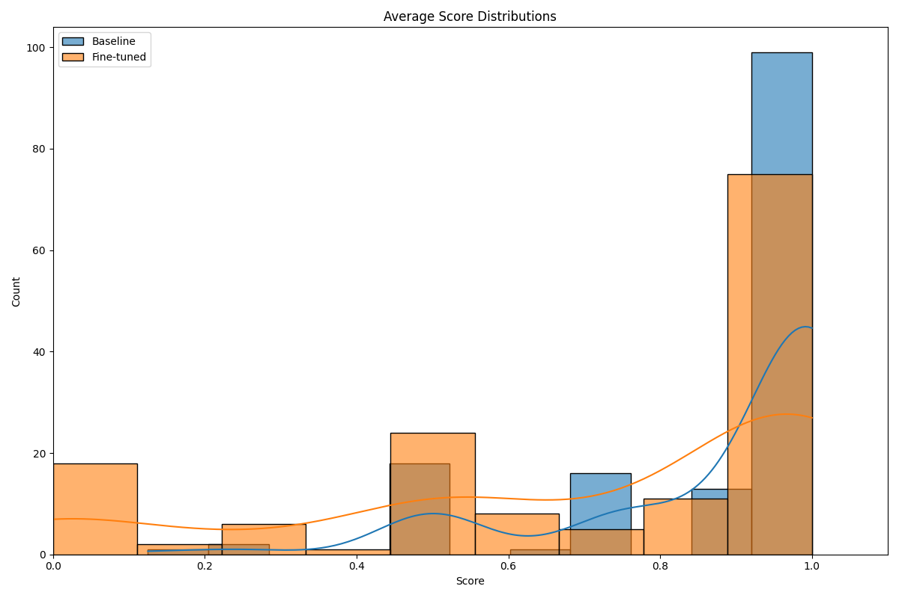

Medical QA Evaluation Report
Summary Results
| Model |
Factuality |
Factuality Std |
Relevance |
Relevance Std |
Average |
Average Std |
| Baseline |
0.7779 |
0.3484 |
0.9850 |
0.0923 |
0.8814 |
0.1936 |
| Baseline + RAG |
0.0000 |
0.0000 |
0.0000 |
0.0000 |
0.0000 |
0.0000 |
| Fine-tuned |
0.6563 |
0.4371 |
0.7549 |
0.3874 |
0.7056 |
0.3468 |
| Fine-tuned + RAG |
0.0000 |
0.0000 |
0.0000 |
0.0000 |
0.0000 |
0.0000 |
Visualizations

Model Performance Comparison
Factuality Scores Distribution

Relevance Scores Distribution
Average Scores Distribution
Factuality Score Distributions

Relevance Score Distributions

Average Score Distributions
Key Insights
- The model with the best overall performance is Baseline.
- The model with the highest factuality score is Baseline.
- The model with the highest relevance score is Baseline.
Conclusion
Based on the evaluation results, we can draw the following conclusions:
- The baseline model achieves a factuality score of 0.7779 and a relevance score of 0.9850.
- The fine-tuned model achieves a factuality score of 0.6563 and a relevance score of 0.7549.
- The difference in performance between the models suggests that Baseline is the most suitable for medical QA tasks.